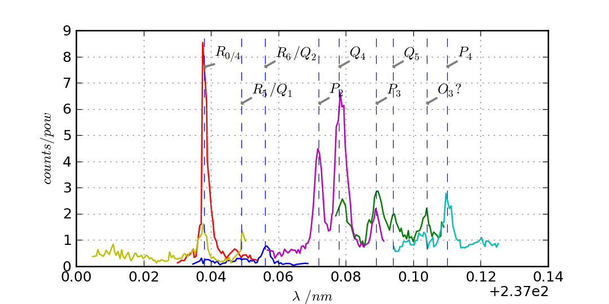
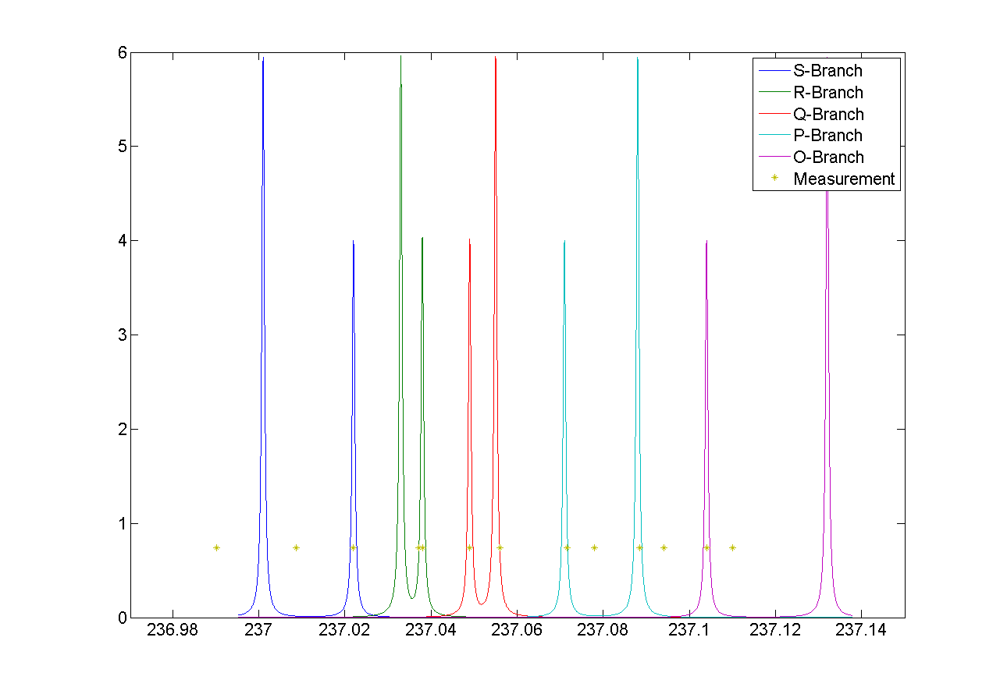

Research notes: June 2013
Table of Contents
Tuesday 11th
N2 Photionisation
16:16 Scan preparations Log
I couldn't go ahead with the scans yesterday because the N2 canister was empty. I don't know how it was emptied, but perhaps its due to one of the many connections it has being leaky. Before the experiment I will re-attach the output so that it is only going to the PI experiment.
Further, while I was waiting, I have set up the autotracker and found that it can scan the full range that we are expecting to see lines over (473.95 nm → 474.30 nm) without significantly changing power.
Mike Hardiman says he's looking about for a pre-amplifier that he used to use for the same channeltrons, and that should help us to get rid of discriminator drift. If that's not here by tomorrow morning I will go ahead and make a scan anyway.
Monday 10th
N2 Photionisation
11:07 Laser optimisation Log
The laser has been attended by a technician and is running at approximately the same power as during the last scans. At around T(q-switch) = (150 → 180) us, the pulse energy of the laser is (1.3 → 1.5) mJ. The beam-profile looks marginally better. I am told that we have ordered replacement prisms (used to separate the fundamental from the frequency doubled light), which should increase the output power to around 2.5 mJ. As mentioned previously, since the photoionisation is a third-order process, the gains from these improvements should be substantial.
I'm going to try taking scans with the current setup. Again ignoring the auto-tracker and instead adjusting the doubling-crystal angle manually approximately every 0.05 nm.
(N.B. It seemed to me, from the behaviour of previous scans, that we could do with improving the stability of the channeltron output signal by adding a preamplifier before the discriminator, but I'm going to hold off on that for the moment just in case the increase in signal that we will see from the above improvements is enough to make this irrelevant.)
Friday 7th
N2 Photoionisation
11:50 Laser optimisation Log
The laser is now being seen to by a technician to try and get it up to its original power (~4 mJ/pulse). This should give us a much bigger signal; since we have a three-photon process the efficiency scales with E3.
11:17 Spectrum data Data
I've cleaned up the spectra taken shown in the entry of the 31st of May. The image below shows the relevant data:

Figure 1. Spectrum of N2 photoionisation, and power of the laser as the scan was being taken.
The main difference here is that I have taken away another junk scan that had slipped in, and excluded all count-rate data for which the power on the meter was less than 10 units (on the scale in the plots). This cutoff was necessary because it was distorting spectra significantly as can be seen at the end of the first iteration of the diagram.
Using the paper (N2PI) as a guide, we have been able to positively identify lines from the P, Q and R branch and can speculate that the line that is not shown in the paper (out of scan range) is from the O branch. The terminology in the paper however is fairly tricky, and I'm not sure we've figured out a correct interpretation yet. It's essential that we know exactly what lines we are looking at however, so I have been trying to investigate.
14:00 Comparison with paper, and terminology Analysis
It seems that the convention is that the symbols represent change in total angular momentum including the angular momentum of the electron:
K = Λelectron + Nrot
In this case we would expect that the R0 line represents the `bare' electronic transition frequency, with no adjustments for rotational energy:
NX = 0,
Δ K = +1,
Δ Λ = +1,
→ Na = 0.
Where X and a subscripts refer to the ground and excited states respectively. The additional rotational energy of these states is given by:
Δ Ei = Bi ⋅ N(N+1), [eqn.1]
(i = X, a)
Given these relations we would expect that the spacing of the lines in the R-branch (R0, R1, R2 etc.), would increase quadratically in accordance with the difference of the rotational constants BX and Ba. We also expect that the rotational constant for the excited state should be smaller than that of the ground state, given that the wavefunction is more spread out and therefore has a larger moment of inertia. This should give lines with quadratic spacing, succesively reducing in energy (or increasing in wavelength).
The characteristic of the R-branch in the paper, however, is not like this. Instead the energy spacing first increases, before reaching a turning point between R2 and R3 and then going on to decrease quadratically. By similar arguments to the above, this is the characteristic of a branch of transitions where the rotational number increases by 1 (which, in this terminology and for this transition would be an S-branch).
The paper's Q-branch in fact behaves in the way we would expect the R-branch to behave, or as a Q-branch would behave for an excited state with no electron angular momentum. It doesn't seem likely that the notation is wrong however, since the fact that Q subscripts start at 1 and P subscripts start at 2 are another indication of correct interpretation of the terminology.
16:13 Fitting Analysis
Taking a heuristic approach, we fit the data to a model that takes into account rotational splittings of the two levels according to equation 1 (rotational-splitting). We can then start with either assumption that R-branch or the Q-branch is the Δ N = 0 transition, and see which model fits best.
- Follows an explanation of fitting using the Q-branch (short answer: it didn't work):
Assuming the Q-branch is Δ N = 0, and taking the literature value of the ground state rotational constant (~1.9) we find an excited state rotational constant of ~1.75. Since the Q-branch in the paper only starts at 1 we can either assume that Q0 is disallowed and extrapolate where it would be, or that Q1 is the fundamental transition. Either way we can fit the Q-branch easily to the paper, but then using the calculated value of Ba, we get no agreement with any of the other lines in the paper or our spectrum.
- And using the R-branch (short answer: it kind-of works):

Figure 2. Fit to the N2 photionisation data for low values of K (K < 3). Higher values give a bad fit. The stars represent observed spectral lines.
Using the R0 line as the fundamental electronic transition, we can calculate BX from the energy difference:
Δ E = E(R0) - E(Q1)
Δ E = 2BX.
This gives us a value of BX of ~0.9, which disagrees with the literature value fairly significantly (approx. a factor of 2). Regardless this fits the paper data well for the lines that we have that are only determined by R0 and BX (R0, Q1 and P2).
Similarly, we can calculate a value of Ba from the energy difference of the S0 and R0 branches. This gives us a value of Ba of ~1.9, which clearly goes against the expectation that Ba < BX. Again disregarding the discrepancy, we find that we get a good fit to the S0 line (dependent only on Ba), and additionally it gives us a good fit for lines ending in K=2 of the upper state. Beyond this both the characteristic and the fit is far off.
This fit is shown in Fig. 2 (low-k-fit). There are several fitted lines that match the data, and their allocations also match those of the paper. The lines that have no corresponding data-points do have corresponding lines or allocations in the paper. The data points that don't have corresponding lines have corresponding allocations in the paper, and come from transitions to the excited state with K>2.
To do
Molecular Lab Experiments
TODO Photoionisation of N2 Nic Amy
- TODO Identify appropriate gnd-state transition
Jack has done most of the work here. Just a case of optimising power etc.
Jack has had to move on to fibre shooting after some trouble with getting a spectrum around the gnd-state transition. I'm going to take over generally, once Matthias has reoptimised the laser and finished baking the chamber (having just replaced the channeltron).
I managed to get a full spectrum on Wednesday and analyse it today. I think we've got the whole series of lines, and I've handed it over to Matthias to see if he can identify the ground state transition from it.
Depending on interpretation of the paper we're using (N2PI), we either have the lines we need or they are a little further to the low energy end of the scale than we currently have. Need help interpreting paper, and will take another longer scan just in case, once the laser is optimised.
HOLD Work on DACs for the new SCL Nic Kevin
- HOLD Building boards
- Matthias has the plans:
Pester him for them.
- Received:
Matthias sent them ages ago, but I didn't spot them in my mail. He's still yet to order the actual DACs though, so there's still time. I could make the boards however, in preparation.
- Matthias is making the boards:
Matthias is making the boards, I think it'll just be up to me to program the whole thing.
- Pins used:
Check with Matthias that his design has incorporated these pins as I/Os:
- Port D: RD8 (peak detect input), RD5 (CNinterrupt)
- U2RX pins, unless he's already designed these away
- HOLD Programming
- TODO Write SPI library for PIC comms with computer
- TODO Write SPI library for PIC comms with DAC
- TODO Write SPI library for PIC comms with computer
TODO Code an automation program for experiments Nic Kevin
- TODO Fast autocorrelation calculation
[ ] Try using CUDA for a fast autocorrelation calculation |
Maybe first just try using Wolfgang's code. It might just be fast enough on its own.
- HOLD Plan out experiment process
Waiting on Keving to collect some data on `phonon-laser' type amplification of the dipole force before we can decide on the exact experimental procedure.
- HOLD Describe phonon laser trick in notes
Check if I already have.
Only really required if it turns out to be usable. Waiting on Kevin's results.
TODO Simulations Nic
- TODO Hanle dip/b-field map simulation
- TODO Fluorescence as a function of B-field for different light pol.
- TODO Sanity check: modulation sensitivity reduce at higher B-field?
- TODO B-field modulation frequency response (reduce laser Rabi f.)
- TODO Fluorescence as a function of B-field for different light pol.
- TODO Single ion `heat-engine' effect
Does the oscillation have something to do with a kind of `parametric' excitation from the laser pressure - Perhaps the ion only feels force from the laser when it is at the edges of its oscillation (no Doppler shift).
- HOLD One or two calcium ions
Although an extra ion will reduce the acceleration of the crystal due to the dipole force, is the increase in signal a good trade-off?
This question is not important if the `phonon-laser'-like approach we're going to try and take works well. This idea is on hold until more work is done there.
General
HOLD Pseudopotential calculations for Oxford
Sent to Laura, awaiting feedback on usage.
HOLD Find submissions for ITCM-Sussex.com
Matthias has reminded us to look through the old website for these.
I should add a scanning cavity lock section to the "Technology" page of the site (extended abstract?).
Furthermore, I think it'd be nice to look over the diagrams that are on there already, and think about whether or not I could make some improved ones in POVRAY.
Rev. Sci. Instrum. 81, 075109 2010:
"We have implemented a compact setup for long-term laser frequency stabilization. Light from a stable reference laser and several slave lasers is coupled into a confocal Fabry–Pérot resonator. By stabilizing the position of the transmission peaks of the slave lasers relative to successive peaks of the master laser as the length of the cavity is scanned over one free spectral range, the long-term stability of the master laser is transferred to the slave lasers.
By using fast analog peak detection and low-latency microcontroller-based digital feedback, with a scanning frequency of 3 kHz, we obtain a feedback bandwidth of 380 Hz and a relative stability of better than 10 kHz at timescales longer than 1 s."
Current undergraduate/masters projects are focused on implementing our scanning cavity lock design with a cheap and feature-rich microcontroller from the dsPIC line (http://www.microchip.com/). Automated impulse-response-function analysis and digital filter generation will provide significant improvements to bandwidth and stability.
- Comments on current webpage:
- There are no sub-titles at the lowest level of the pages when looking at the research interests. e.g. "ion-photon entanglement" is a page inside "cavity-QED", but when you click on it it is title only "cavity-QED".
- Only "charge exchange reactions" in the molecular physics section. Should we show something about our research direction?
- Can we add references to our papers in the "crystal weighing" and "optical excitation" sections?
HOLD Ask Hiroki for a look at the code for cavity mode prop.
Asked Hiroki, but he hasn't finished it yet.